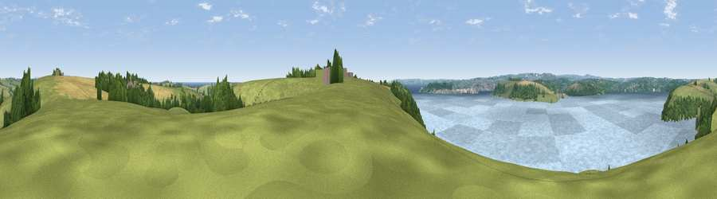

Viewpoint near Halwartha
#15687 in England · top 37% of its area beats it · near Halwartha · access?Where it is
The exact computed spot (SW 84625 34725). Click the marker for map links.
Public access: no public right of way or access land is recorded at this exact spot — it may be on private land. Computed from Natural England's CRoW access layer and OpenStreetMap rights of way — not the legal definitive map. Always verify locally.
The view, rendered

A 360° render of this exact spot computed from the terrain model, tree cover and land cover — summer colours, afternoon light, calibrated against photographs of famous viewpoints. Real trees, hedges and buildings will differ in detail.
The panorama
Grey silhouette: terrain skyline in each direction (720 bearings, Earth curvature and refraction included). Dashed green: skyline with trees (+15 m) and buildings (+8 m) as obstacles. Blue strip: how far the ground is visible on each bearing.
Where the view opens
Wedge length = distance to the farthest visible ground on that bearing (vegetation-aware). Rings at 10, 25 and 50 km.
What fills the view
54% water · 27% grassland · 9% woodland · 9% cropland · 1% built-up
Angular shares of the visible panorama (visual magnitude), not map area. Landscape diversity 0.51 (0–1 Shannon).
Key numbers
More beautiful places nearby
The staircase of upgrades: each row has a higher view potential than everything closer. Driving times are estimates from straight-line distance, calibrated against real road routing — check an actual route before setting out.
| Place | Direction | Drive | Score |
|---|---|---|---|
| Viewpoint near Mylor Churchtown | W · 2 km | ~6 min | 60.6 |
| Viewpoint near Bohortha | SE · 3 km | ~6 min | 71.4 |
| Drake's Downs | S · 3 km | ~8 min | 71.9 |
| Viewpoint near St. Keverne | SSW · 13 km | ~24 min | 72.2 |
| Viewpoint near Portloe | ENE · 13 km | ~24 min | 74.4 |
| Viewpoint near Lanner | WNW · 14 km | ~26 min | 74.5 |
| Carn Brea | WNW · 17 km | ~30 min | 81.1 |
| St Agnes Beacon | NW · 21 km | ~35 min | 86.1 |
50.17333, -5.01758 · source: screening · position refined by local search. Computed location — check access rights before visiting.